Я и моё тело по неделям
I триместр (1–12 недель) — «Всё только начинается»
мама
- Токсикоз — реакция на гормоны плода. К 14 неделям обычно проходит.
- Сонливость и усталость — организм копит энергию. Спи, сколько хочешь.
- Частое мочеиспускание — матка давит на мочевой пузырь.
- Перепады настроения — это гормоны, ты не сходишь с ума.
- Грудь набухает и болит — готовится к кормлению.
плод
- Сердце начинает биться с 6-й недели.
- К 8-й неделе закладываются все органы: мозг, печень, почки.
- На 10-й неделе появляются пальчики и веки.
- На 12-й неделе плод двигается, но ты это ещё не чувствуешь.
- На 12-й неделе сосёт палец.
СВЯЗЬ МАМЫ И ПЛОДА
- Всё, что ты ешь и пьёшь, идёт плоду. Алкоголь и курение под строжайшим запретом.
- Твой стресс → кортизол → может влиять на нервную систему малыша.
- Любые лекарства — только после врача. Плацента ещё не работает как фильтр.
- Хочешь необычного? Организм подсказывает, чего не хватает. Но без фанатизма.
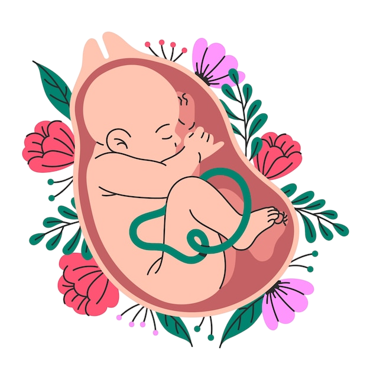
РОСТ И РАЗВИТИЕ ПЛОДА (размеры в привычных сравнениях)
1-4я неделя
Размер с маковое семечко
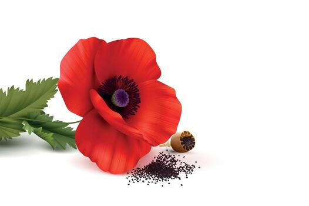
5я неделя
Размер с семечко от яблока
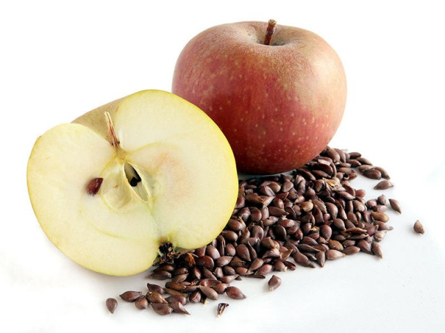
6я неделя
Размер с зелёную горошинку
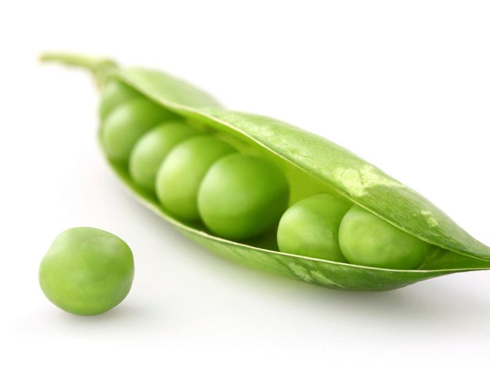
7я неделя
Размер с ягоду черники
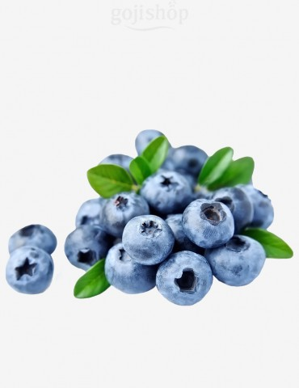
8я неделя
Размер с ягоду малины
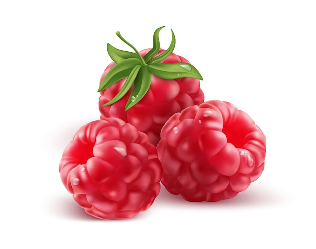
9я неделя
Размер с виноградинку
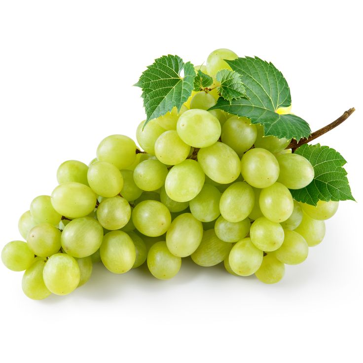
10я неделя
Размер с маслину
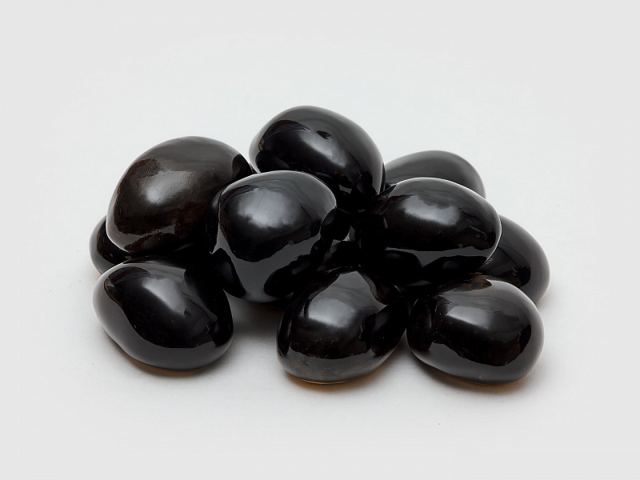
11я неделя
Размер с лайм
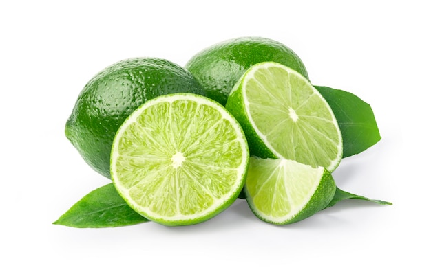
12я неделя
Размер со сливу
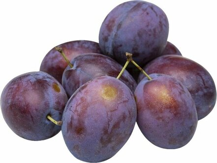
КРАСНЫЕ ФЛАГИ — СРОЧНО К ВРАЧУ
- Кровянистые выделения (алые, коричневые, даже мажущие) — исключить угрозу выкидыша.
- Сильная тянущая боль внизу живота или пояснице — особенно если отдаёт в прямую кишку.
- Неукротимая рвота (более 3–5 раз в день, не можете пить воду) — грозит обезвоживанием.
- Резкое исчезновение симптомов беременности (перестало тошнить, отпустило грудь за один день) — может указывать на замирание беременности.
- Повышение температуры выше 37,5 °C без признаков простуды — возможна инфекция.
II триместр (13–27 недель) — «Золотое время»
мама
- Токсикоз уходит — здравствуй, аппетит и хорошее настроение.
- Живот начинает заметно расти, матка выходит из таза.
- Могут быть отёки, изжога, запоры — гормоны расслабляют всё.
- Первые шевеления: на 18–22 неделе (как бабочки или пузырьки).
- На животе может появиться тёмная линия — это пигментация, пройдёт после.
плод
- С 18 недель слышит твой голос и музыку.
- К 20 неделям у ребёнка есть режим сна и бодрствования.
- На 24 неделе лёгкие начинают готовиться к дыханию.
- На 26 неделе открывает глаза и различает свет и тьму.
- Икает, зевает, сосёт палец.
СВЯЗЬ МАМЫ И ПЛОДА
- Если ты слушаешь спокойную музыку — у малыша замедляется сердцебиение.
- Погладила живот? Может толкнуть в ответ — это диалог.
- Твоя радость → эндорфины → ребёнок чувствует безопасность.
- Не хватает железа? Анемия мамы → гипоксия плода. Ешь красное мясо, гречку.
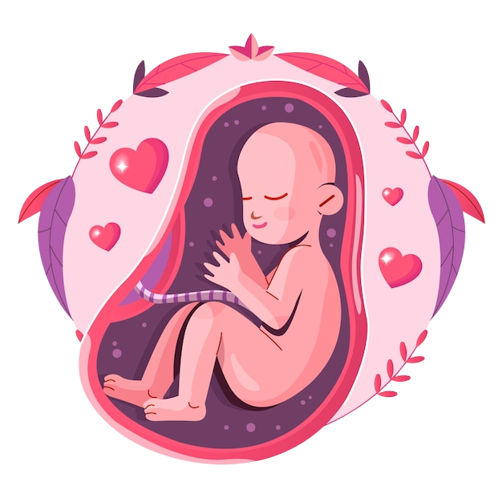
РОСТ И РАЗВИТИЕ ПЛОДА (размеры в привычных сравнениях)
13я неделя
Размер с персик
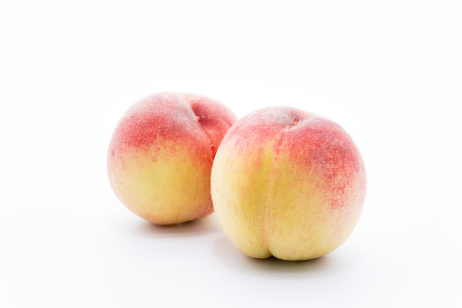
14я неделя
Размер с лимон
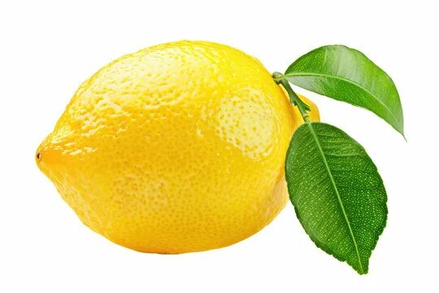
15я неделя
Размер с яблоко
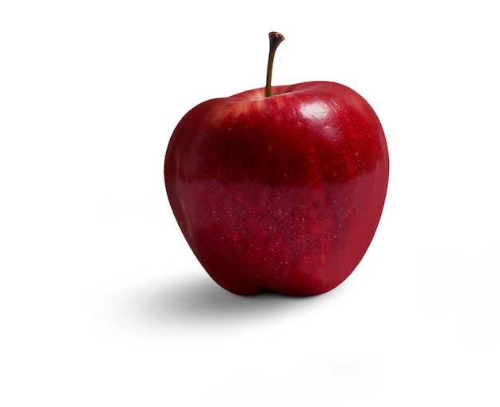
16я неделя
Размер с авокадо
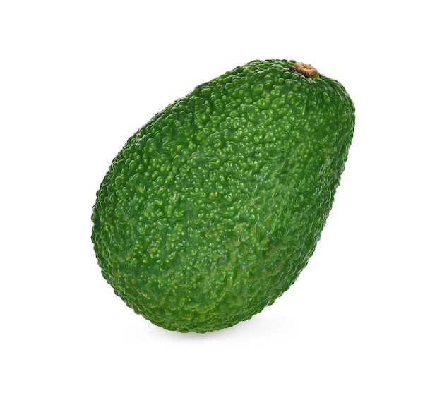
17я неделя
Размер с грушу
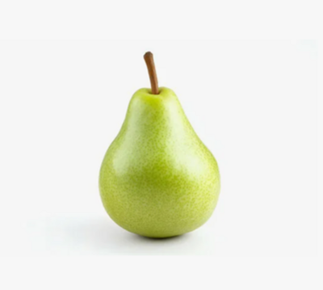
18я неделя
Размер с батат
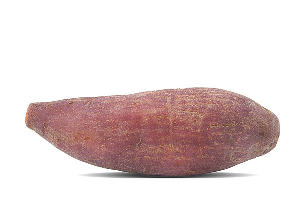
19я неделя
Размер с манго
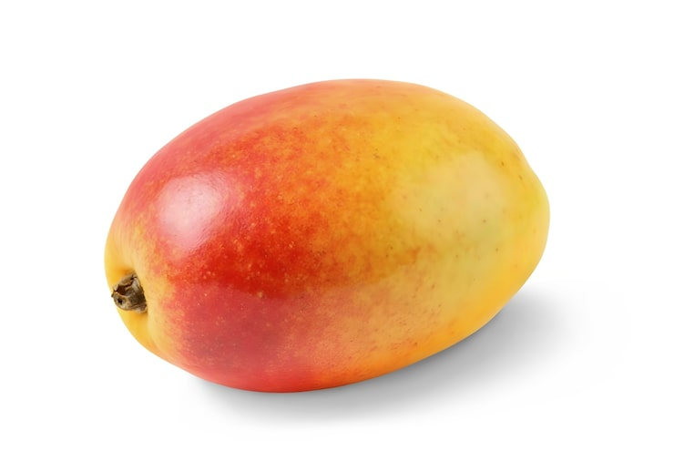
20я неделя
Размер с банан
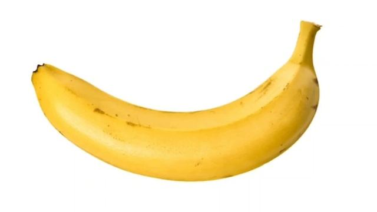
21я неделя
Размер с гранат
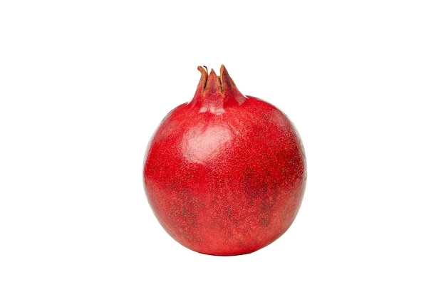
22я неделя
Размер с папаю
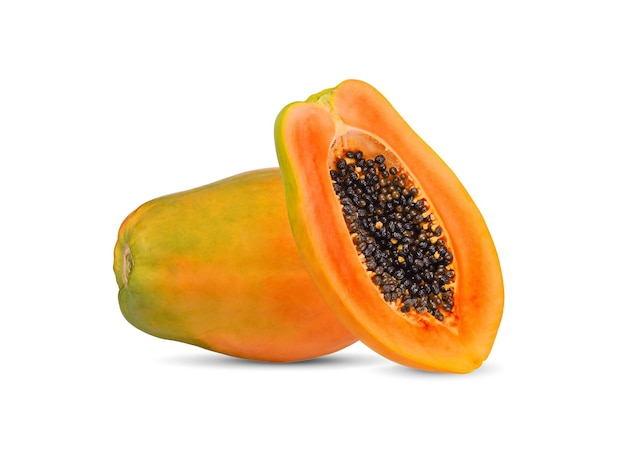
23я неделя
Размер с грейпфрукт
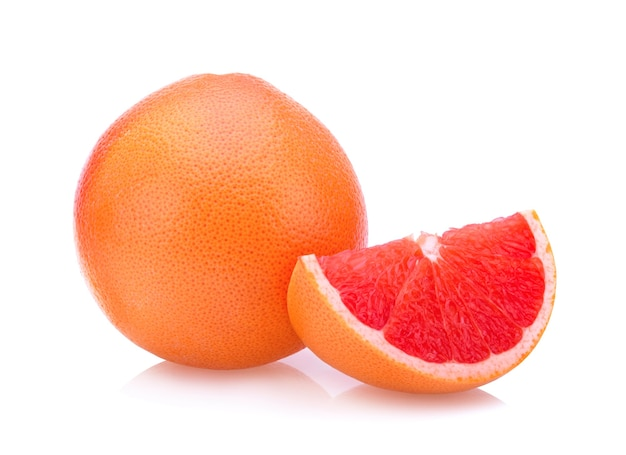
24я неделя
Размер с початок кукурузы
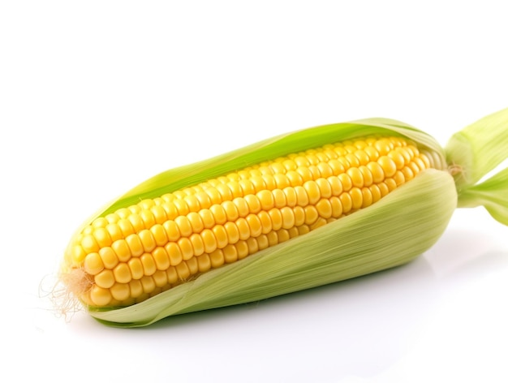
КРАСНЫЕ ФЛАГИ — СРОЧНО К ВРАЧУ
- Кровянистые выделения любой интенсивности — могут говорить об отслойке плаценты или предлежании.
- Подтекание вод (жидкие прозрачные выделения, ощущение влажности, усиливающееся лёжа) — угроза инфицирования плода.
- Сильные отёки лица, рук, ног + скачки давления (выше 140/90) — первые признаки гестоза (позднего токсикоза).
- Резкие сильные головные боли, мелькание мушек перед глазами, боль в правом подреберье — тоже гестоз, опасен для жизни.
- Прекращение или резкое снижение шевелений после 22 недель (меньше 6 слабых толчков за 12 часов) или, наоборот, бурная активность с болью — гипоксия плода.
- Любые схваткообразные боли внизу живота до 37 недель — угроза преждевременных родов.
III триместр (28–40 недель) — «Финишная прямая»
мама
- Тяжело дышать, наклоняться, спать (живот большой, матка давит на диафрагму).
- Отёки — норма, но если отёкло лицо + подскочило давление → срочно к врачу (гестоз).
- Тренировочные схватки становятся чаще (Брэкстона-Хикса).
- Из груди может подтекать молозиво — это норма, не трогай.
- С 36 недель сумка в роддом собрана и стоит у выхода.
плод
- После 28 недель мозг активно растёт (извилины, борозды).
- Набирает жировую прослойку — после родов поможет не замёрзнуть.
- К 36 неделям переворачивается головкой вниз (у 95% детей).
- Слышит всё: твой голос, папин, музыку, даже звуки твоего живота.
- Узнаёт голоса родителей.
СВЯЗЬ МАМЫ И ПЛОДА
- Разговаривай с животом — после рождения малыш узнает твой голос.
- Если ты спокойна — спокоен и он. Если тревожна — может сильно пинаться.
- Схватки начинаются, когда малыш даёт сигнал: «Я готов!»
- Плацента передаёт ему твои антитела — это первая иммунная защита.
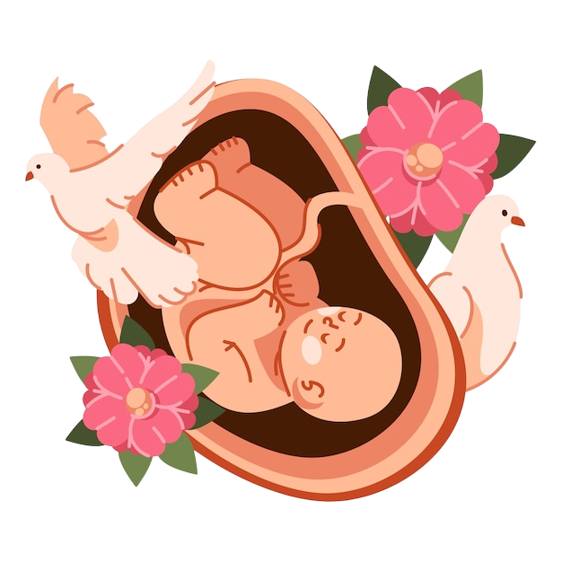
РОСТ И РАЗВИТИЕ ПЛОДА (размеры в привычных сравнениях)
25я неделя
Размер с цветную капусту
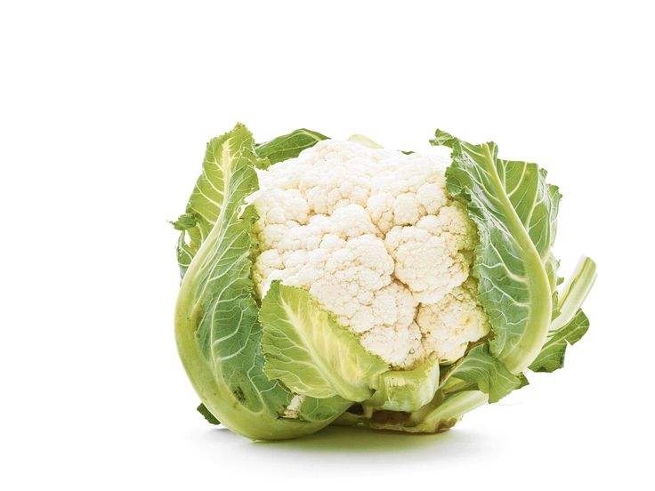
26я неделя
Размер с кочан салата
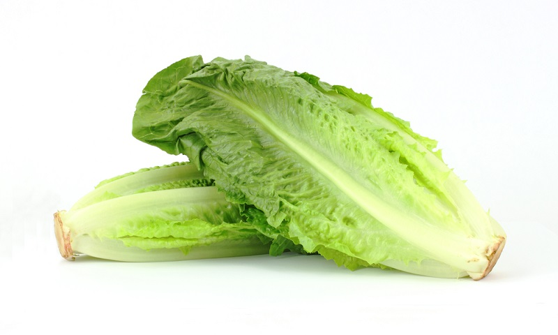
27я неделя
Размер со свеклу
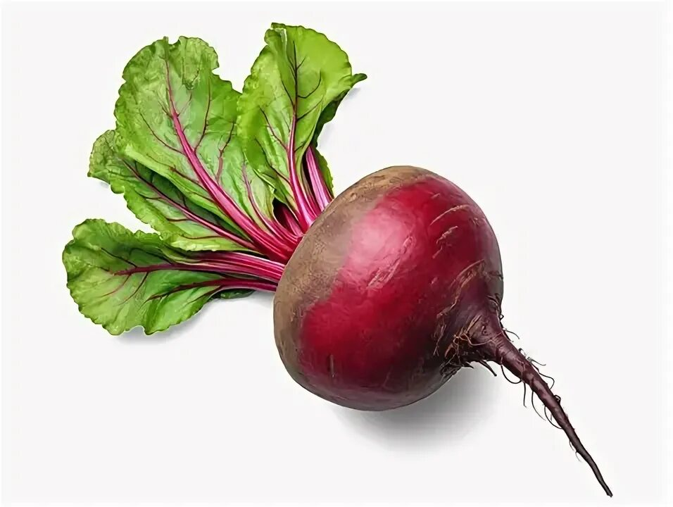
28я неделя
Размер с баклажан
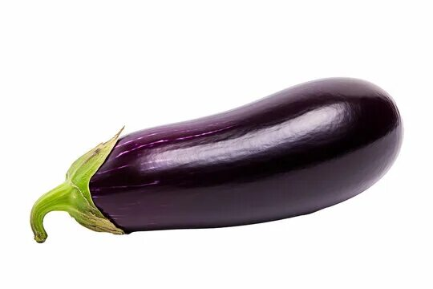
29я неделя
Размер с патиссон
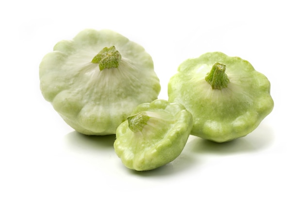
30я неделя
Размер с длинный огурец
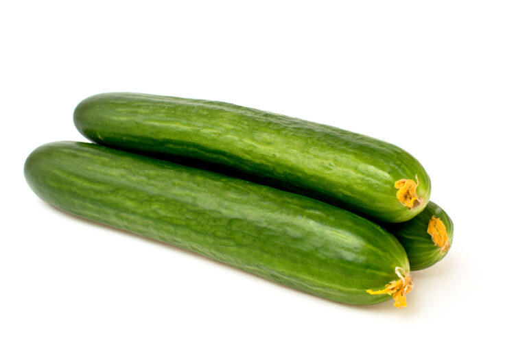
31я неделя
Размер с ананас
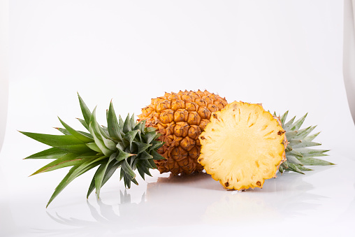
32я неделя
Размер с маленькую тыкву
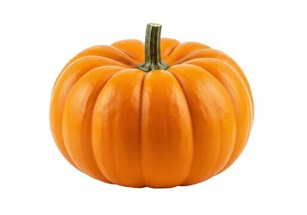
33я неделя
Размер дуриан
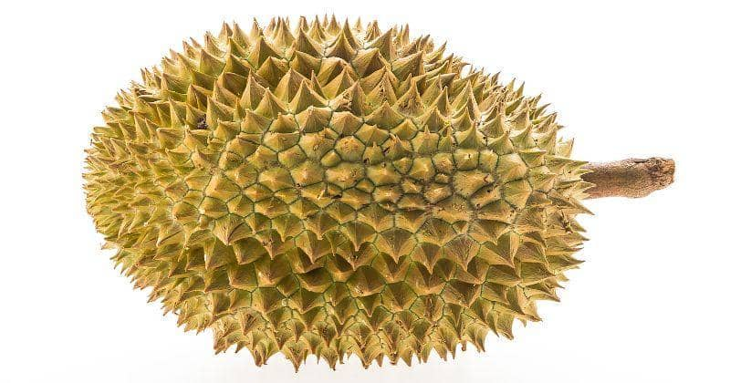
34я неделя
Размер с грушевидную тыкву
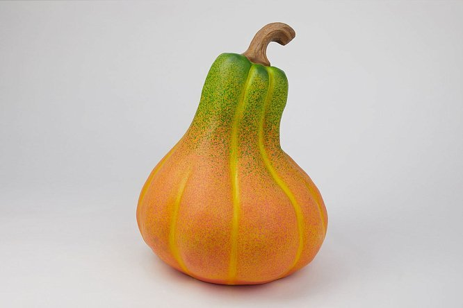
35я неделя
Размер с кокос
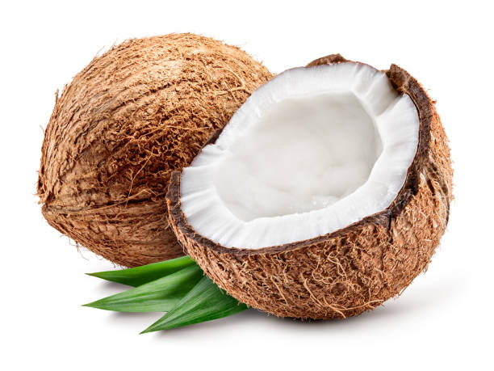
36я неделя
Размер с небольшую дыню
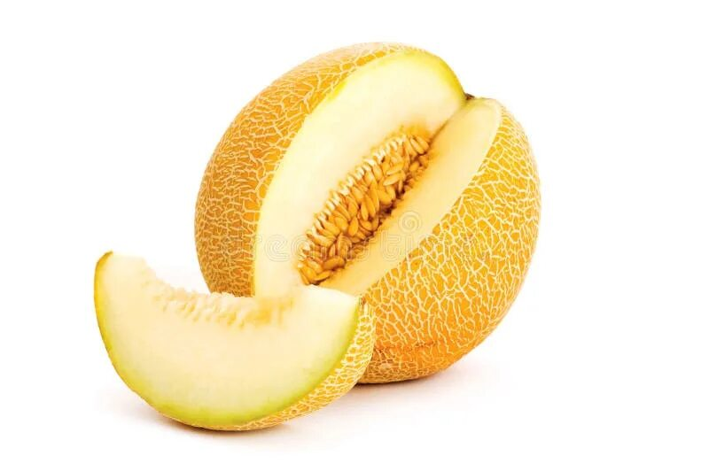
37я неделя
Размер с сельдерей
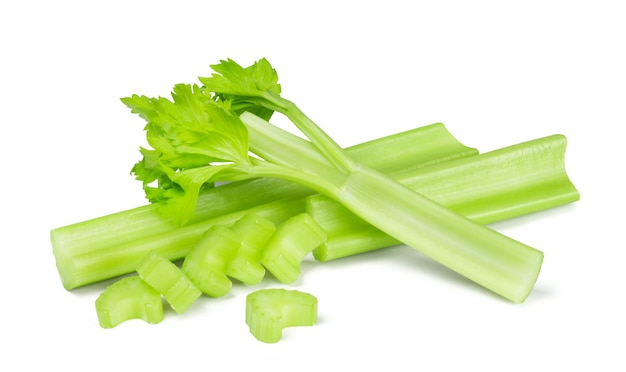
38я неделя
Размер с дыню
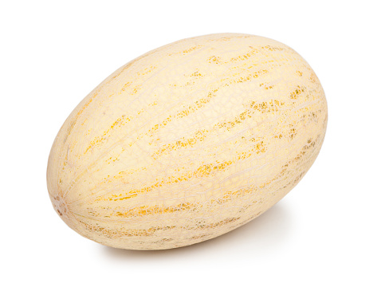
39я неделя
Размер с арбуз
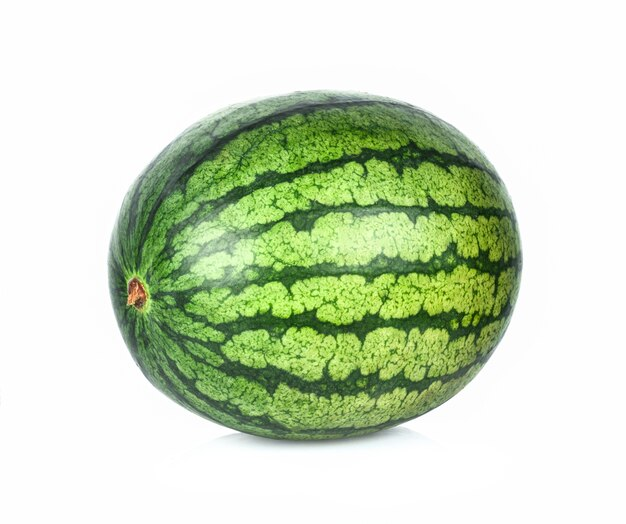
40я неделя
Размер с большую тыкву
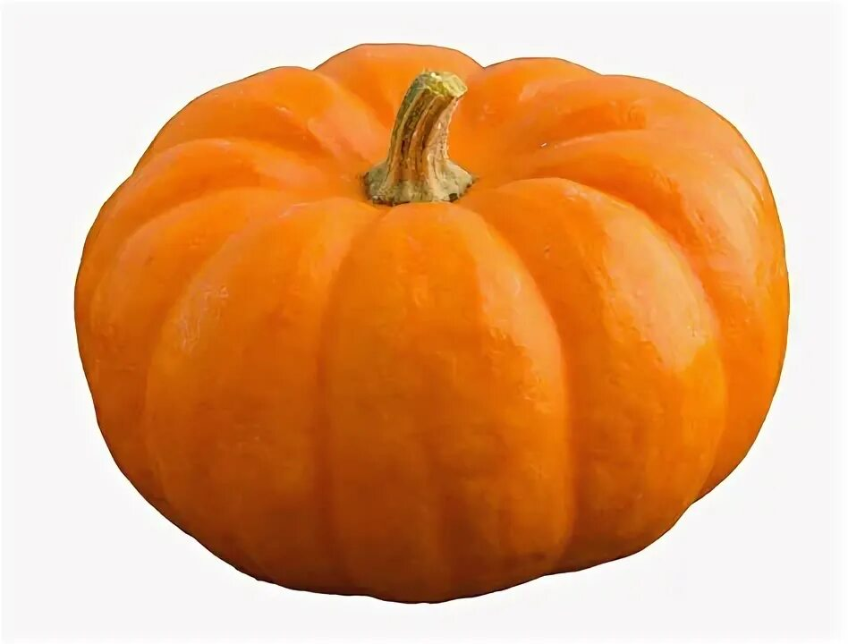
После рождения
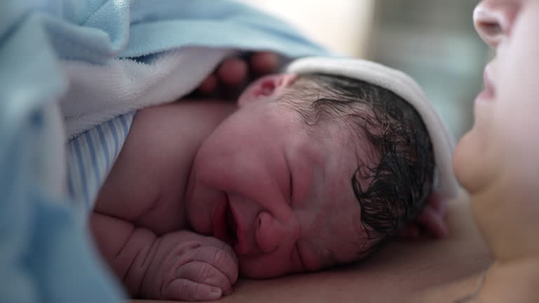
После выписки
Физиологическая убыль веса
КРАСНЫЕ ФЛАГИ — СРОЧНО К ВРАЧУ
- Любые кровянистые выделения — могут быть предлежанием или отслойкой плаценты (счёт на минуты).
- Массивное подтекание или отхождение вод (вылилось как ведро или постоянно капает) — нужна госпитализация.
- Резкое повышение давления (выше 140/90), сильная головная боль, мушки перед глазами, боль под рёбрами — тяжёлый гестоз (эклампсия), может начаться судороги.
- Регулярные схватки чаще 5 раз в час с болью до 37 недель преждевременные роды. После 37 недель — езжайте в роддом.
- Резкое прекращение шевелений на несколько часов (или, наоборот, «бешеные» толчки с болью) — страдает плод.
- Температура выше 38°C + боль в животе или неприятные выделения — возможна инфекция плодных оболочек.
- Сильное головокружение, потемнение в глазах, обморок — нарушение кровообращения или отслойка плаценты.